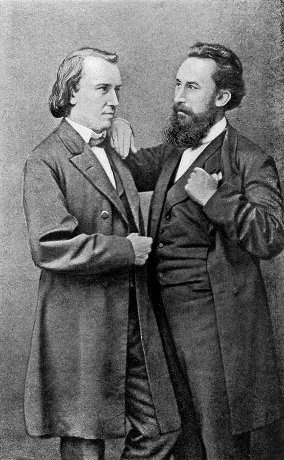

In 1850 Brahms met the Hungarian violinist Ede Reményi and accompanied him in a number of recitals over the next few years. This was his introduction to "gypsy-style" music such as the csardas, which was later to prove the foundation of his most lucrative and popular compositions, the two sets of Hungarian Dances (1869 and 1880).[14][15] 1850 also marked Brahms's first contact (albeit a failed one) with Robert Schumann; during Schumann's visit to Hamburg that year, friends persuaded Brahms to send the former some of his compositions, but the package was returned unopened.
In 1853 Brahms went on a concert tour with Reményi. In late May the two visited the violinist and composer Joseph Joachim at Hanover. Brahms had earlier heard Joachim playing the solo part in Beethoven's violin concerto and been deeply impressed.[17] Brahms played some of his own solo piano pieces for Joachim, who remembered fifty years later: "Never in the course of my artist's life have I been more completely overwhelmed".[18] This was the beginning of a friendship which was lifelong, albeit temporarily derailed when Brahms took the side of Joachim's wife in their divorce proceedings of 1883.[19] Brahms also admired Joachim as a composer, and in 1856 they were to embark on a mutual training exercise to improve their skills in (in Brahms's words) "double counterpoint, canons, fugues, preludes or whatever".[20] Bozarth notes that "products of Brahms's study of counterpoint and early music over the next few years included "dance pieces, preludes and fugues for organ, and neo-Renaissance and neo-Baroque choral works".
After meeting Joachim, Brahms and Reményi visited Weimar, where Brahms met Franz Liszt, Peter Cornelius, and Joachim Raff, and where Liszt performed Brahms's Op. 4 Scherzo at sight. Reményi claimed that Brahms then slept during Liszt's performance of his own Sonata in B minor; this and other disagreements led Reményi and Brahms to part company.
Brahms visited Düsseldorf in October 1853, and, with a letter of introduction from Joachim,[23] was welcomed by Schumann and his wife Clara. Schumann, greatly impressed and delighted by the 20-year-old's talent, published an article entitled "Neue Bahnen" ("New Paths") in the 28 October issue of the journal Neue Zeitschrift für Musik nominating Brahms as one who was "fated to give expression to the times in the highest and most ideal manner".[24] This praise may have aggravated Brahms's self-critical standards of perfection and dented his confidence. He wrote to Schumann in November 1853 that his praise "will arouse such extraordinary expectations by the public that I don't know how I can begin to fulfil them".[25] While in Düsseldorf, Brahms participated with Schumann and Schumann's pupil Albert Dietrich in writing a movement each of a violin sonata for Joachim, the "F-A-E Sonata", the letters representing the initials of Joachim's personal motto Frei aber einsam ("Free but lonely").
Schumann's accolade led to the first publication of Brahms's works under his own name. Brahms went to Leipzig where Breitkopf & Härtel published his Opp. 1–4 (the Piano Sonatas nos. 1 and 2, the Six Songs Op. 3, and the Scherzo Op. 4), whilst Bartholf Senff published the Third Piano Sonata Op. 5 and the Six Songs Op. 6. In Leipzig, he gave recitals including his own first two piano sonatas, and met with Ferdinand David, Ignaz Moscheles, and Hector Berlioz, among others.
After Schumann's attempted suicide and subsequent confinement in a mental sanatorium near Bonn in February 1854 (where he died of pneumonia in 1856), Brahms based himself in Düsseldorf, where he supported the household and dealt with business matters on Clara's behalf. Clara was not allowed to visit Robert until two days before his death, but Brahms was able to visit him and acted as a go-between. Brahms began to feel deeply for Clara, who to him represented an ideal of womanhood. Their intensely emotional platonic relationship lasted until Clara's death. In June 1854 Brahms dedicated to Clara his Op. 9, the Variations on a Theme of Schumann.[21] Clara continued to support Brahms's career by programming his music in her recitals.
Brahms's personal life was also troubled. In 1859 he became engaged to Agathe von Siebold. The engagement was soon broken off, but even after this Brahms wrote to her: "I love you! I must see you again, but I am incapable of bearing fetters. Please write me ... whether ... I may come again to clasp you in my arms, to kiss you, and tell you that I love you." They never saw one another again, and Brahms later confirmed to a friend that Agathe was his "last love".